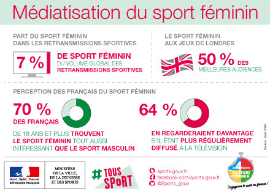

Les inégalités entre le football féminin et masculin sont encore marquées, malgré les avancées notables de ces dernières années. Ces disparités se manifestent dans divers aspects tels que les salaires, les financements, la couverture médiatique, et les opportunités de développement. Voici une analyse détaillée de ces inégalités, illustrée par des pourcentages et des chiffres clés.
L'une des inégalités les plus frappantes entre le football féminin et masculin réside dans les salaires des joueurs et joueuses. Par exemple, en 2019, les joueurs de la Ligue de Football Professionnel (MLS) aux États-Unis avaient un salaire moyen de 410 000 dollars par an, tandis que les joueuses de la National Women’s Soccer League (NWSL) percevaient en moyenne seulement 53 000 dollars par an. Cela représente un écart de plus de 87%. De plus, lors de la Coupe du Monde 2018, l'équipe nationale masculine française a remporté 38 millions de dollars pour sa victoire, tandis que l'équipe féminine américaine, championne en 2019, a reçu seulement 4 millions de dollars, soit environ 10% du montant perçu par leurs homologues masculins.
La couverture médiatique est un autre domaine où les inégalités sont flagrantes. En 2020, une étude de l’Université de Stanford a révélé que seulement 4% des articles sportifs dans les grands médias étaient consacrés au sport féminin. De plus, selon une analyse de la BBC, les retransmissions télévisées des matchs de football féminin représentaient environ 10% de la couverture totale des sports. Cette faible visibilité limite non seulement la reconnaissance des joueuses, mais aussi les opportunités de parrainage et de financement.
Les opportunités de développement pour les joueuses de football sont également moins nombreuses. Selon une enquête de la FIFA en 2020, 60% des fédérations nationales de football dans le monde ne disposent pas de programmes de formation spécifiques pour les jeunes filles. En comparaison, la plupart des fédérations offrent des programmes de développement bien établis pour les garçons, dès leur plus jeune âge. Cette différence limite les perspectives de carrière pour les joueuses et leur accès à un encadrement professionnel de qualité.

Les inégalités entre le football féminin et masculin sont profondes et multiformes, affectant les salaires, la couverture médiatique, les investissements et les opportunités de développement. Bien que des progrès aient été réalisés, il reste encore beaucoup à faire pour atteindre une véritable égalité. Les pourcentages et les chiffres clés illustrent l'ampleur de ces disparités et soulignent la nécessité d'initiatives continues pour promouvoir l'équité dans le monde du football.